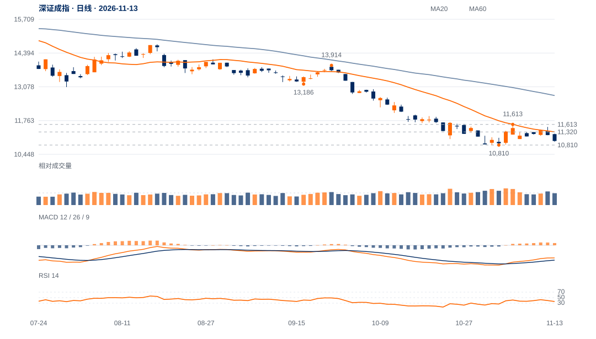

反弹高点和波段均转弱
11月5日11613.40峰在12日得到右侧确认；10月30日至5日反弹5.88%，之后六日跌4.38%，原反弹大部分进展被回吐。
10810是当前最重要的分界。弱势背景与回吐支持测试旧低，但距离过近也提高短线反抽可能；应先观察测试后的价格回收，而非预先确认破底。

查看大图 ↗先收回11198—11320，再按原11613两日及11639中峰检验升级。
10810失守撤销本轮守底解释；不能以更低位置替换旧底继续等待。
11月5日11613.40峰在12日得到右侧确认；10月30日至5日反弹5.88%，之后六日跌4.38%，原反弹大部分进展被回吐。
现收10968.79，距原10810约158点，仅0.51个ATR；13日收盘位置9%，尚无前低附近明显回收。
近20日绝对跌7.06%，相对沪深300比值跌3.49%；OBV20方向余额为负。说明弱势不只来自大盘同步回调，需求修复仍落后。
旧低未破，且距其不足一个日常波动尺度。下探后能否快速收回10941—10969并形成更高收盘，比继续外推跌幅更重要。